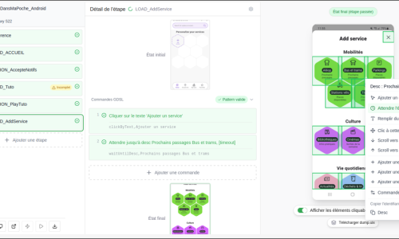
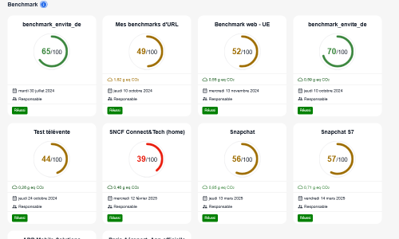

Sobriété et impact du Parcours utilisateur : Mesurez, Comprenez, Améliorez
Préparez et lancez des mesures de Parcours utilisateur sur les terminaux de notre banc de tests mobiles. Choisissez le terminal et le réseau selon vos objectifs.
Analysez les résultats à l'échelle du parcours (impact CO2, écoscore) et de chaque étape du parcours.
Identifiez les points de surconsommation, les défauts de performance, et améliorez la sobriété du Parcours !
De nouveaux KPI pour votre Produit : impacts environnementaux et écoscore
Simple en apparence, l'écoscore Greenspector est basé sur une analyse complète de toutes les étapes du parcours utilisateur, sur 3 axes différents, en tenant compte du caractère critique ou non des étapes mesurées. L'écoscore Greenspector est vraiment représentatif du niveau de sobriété de votre parcours.
Préparez les tests avec un éditeur simple et puissant
Décrire un parcours utilisateur est simple et rapide grâce au TestBuilder, notre éditeur exclusif, qui s'appuie sur notre langage propriétaire, le GDSL. Il est constitué de mots clés simples (cliquer, attendre…), mais puissant pour reproduire fidèlement les parcours utilisateurs les plus complexes.
Construisez vos parcours, étape par étape, grâce aux commandes disponibles depuis les captures d'écran intégrées.
Utilisez un seul outil pour vos parcours Android, iOS et Web.

2
Lancez les mesures sur un terminal du banc de test
Sélectionnez le modèle de terminal qui correspond à vos objectifs de test.
Un terminal « moyen » pour les mesures courantes, ou un modèle plus ancien pour vérifier si le parcours peut être réalisé par des utilisateurs moins favorisés ? Et pourquoi pas en connexion 3G, pour tester la dépendance du parcours à la qualité du réseau ?
Pour tester vos applications métiers, demandez-nous d'ajouter sur le banc tests un terminal issu de votre flotte mobile (en option).
3
Analysez : quelles étapes du Parcours faut-il améliorer ?
Visualisez les étapes impactant les performances et la sobriété et identifiez les causes.
Consultez le tableau de bord pour identifier rapidement les points du parcours qui posent problème : surconsommation d'énergie, souci de performance, problème de requêtes ou service tiers… L'interface propose plusieurs niveaux de lecture, du plus simple au plus détaillé, pour aider toute votre équipe à comprendre.
Faites des regroupements par domaine fonctionnel pour faciliter la lecture.
Vous savez quelles sont les étapes à améliorer pour gagner en sobriété, améliorer la performance et réduire les impacts. Vous pouvez prioriser vos efforts efficacement.
4
Améliorez en continu !
Lancez une mesure avant chaque version pour éviter les anomalies et piloter en surveillant l'évolution des indicateurs.
Utilisez les API pour déclencher les tests depuis votre CI/CD (GitLab CI, Azure CI, Jenkins…). Utilisez d'autres API pour exporter les résultats vers vos propres tableaux de bord.
Travailler sur la sobriété permet clairement d'obtenir une application plus performante.
Une vue d'ensemble de votre parc applicatif, sans effort
Toutes vos équipes n'ont pas la même maturité ni la même disponibilité. Comment faire pour avoir une première idée de l'impact de leur Produit, sans perturber leur travail ?
Grâce à notre test BenchMark intégré, obtenez en 1 clic un score et un impact carbone de n'importe quelle page web ou appli mobile.

Les Tech lead adorent
Pour aller plus loin, observez des métriques supplémentaires permettant d'analyser finement le comportement du logiciel (énergie, données entrantes/sortantes, CPU, mémoire, métriques système Android… Certaines métriques sont disponibles uniquement sur terminaux Android).
La mesure directe et ultra-précise de la consommation de batterie tout au long du parcours utilisateurs apporte un nouveau regard sur le comportement de votre application.
Reconnu dès 2020 par la Fondation Solar Impulse parmi les 1000+ « solutions efficientes pour protéger l'environnement »
Nos innovations sont le fruit de notre R&D. Notre contribution aux travaux scientifiques a été exposée dans de nombreux articles et conférences internationales
Notre modèle d'impacts est compatible avec les standards du domaine : ACV (ISO 14040), SCI de Green Software Foundation, RCP ADEME…
Ils utilisent Greenspector Studio pour allier responsabilité environnementale, satisfaction des utilisateurs et performance de leurs applications